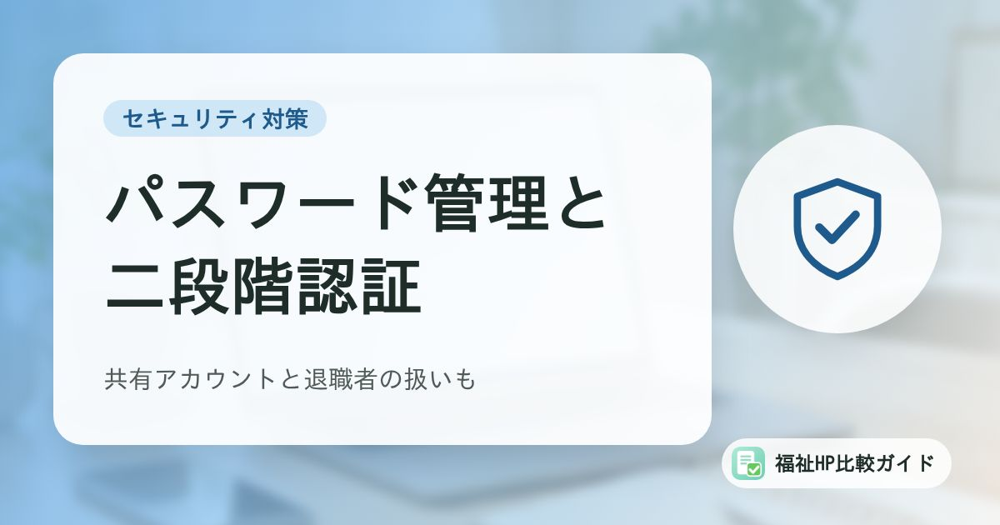

職員のパスワード管理と二段階認証｜福祉事業所で決めたいルールと共有アカウントの扱い

記録ソフト、請求ソフト、メール、ホームページの管理画面など、福祉事業所の職員が使うIDとパスワードは年々増えています。「覚えやすいように同じパスワードを使い回す」「みんなで同じアカウントを使う」といった運用は、不正ログインの入口になりかねません。この記事では、総務省の解説をもとに、事業所で決めておきたいパスワードのルールを整理します。
この記事でわかること
- 不正ログインの原因になりやすいパスワードの使い方
- 安全なパスワードの作り方と保管方法（定期的な変更は不要）
- 二段階認証（多要素認証）の仕組みと使いどころ
- 共有アカウント・退職者のアカウント・パスワード再発行の扱い
不正ログインはどこから起きるのか
総務省の「国民のためのサイバーセキュリティサイト」では、攻撃者が正規のユーザーのIDとパスワードを使って不正アクセスを行うことがあるとし、IDやパスワードが手に入れられてしまう原因として次のようなものを挙げています。
- 推測されやすい、弱いパスワードを使っている
- ほかのサービスで漏えいしたパスワードと同じものを使っている
- 退職した人のアカウントが残っている
- テスト用のアカウントが残っている
- 長い間変更されていない共有アカウントを使っている
- 人の心理的なすきをついて聞き出される（ソーシャルエンジニアリング）
福祉事業所では、利用者の障害や病気、生活の状況など、特に配慮が必要な情報を扱います。個人情報保護委員会のガイドラインでも、個人データを扱う情報システムについて、使う職員が正当な権限を持つ人であることを確認する「アクセス者の識別と認証」が、講じなければならない安全管理措置のひとつとして示されています。パスワードの管理は、その土台です。
安全なパスワードの作り方
総務省の解説では、安全なパスワードとは、他人に推測されにくく、ツールなどで機械的に割り出しにくいものとされています。
- 理想は、ある程度長いランダムな英数字の並び
- 覚える必要がある場合は、関係のない複数の単語（ローマ字でもよい）をつなげたり、間に数字を挟んだりする
- スマートフォンやWebブラウザに標準で付いているパスワード生成機能を活用する
避けたいパスワードの例
| 種類 | 例 |
|---|---|
| IDと同じ文字列 | ユーザー名をそのまま使う |
| 本人や家族の情報 | 名前、電話番号、生年月日、住所、車のナンバー |
| 辞書にある単語ひとつだけ | password、baseball など |
| 同じ文字の繰り返し、わかりやすい並び | aaaa、0000、123456、qwerty など |
| 短すぎる文字列 | 数文字だけのもの |
事業所の場合は、事業所名、所在地、電話番号、職員番号なども、外部から推測されやすいので避けましょう。
使い回さない。定期的な変更は不要
総務省の解説では、パスワードはできる限り複数のサービスで使い回さないよう呼びかけています。あるサービスから流出したIDとパスワードを使って、ほかのサービスへの不正ログインを試す手口があるためです。
「3か月ごとに変更」はもう必要ない
以前はパスワードの定期的な変更がすすめられていましたが、総務省の解説では、流出した事実がない場合は定期的に変更する必要はないとされています。定期的な変更を求めると、パスワードが単純になったり、使い回しが増えたりすることのほうが問題だからです。流出のおそれがあるときに、すぐ変更することが大切です。
パスワードの保管方法
せっかく安全なパスワードを作っても、他人に知られてしまえば意味がありません。総務省の解説では、次の点に特に注意するよう示されています。
- 同僚などの第三者に教えず、秘密にする
- パスワードを電子メールでやりとりしない
- パスワードのメモを、パソコンの画面など人の目に触れる場所に貼らない
- やむを得ずメモする場合は、鍵のかかる机や金庫など安全な方法で保管する
パスワード管理ツールを使う
サービスごとに違う安全なパスワードを覚えておくのは大変です。総務省の解説では、パスワードを覚える必要のないパスワード管理ツールの利用も推奨されています。スマートフォンやWebブラウザの標準機能、専用のアプリなどがあります。
ただし、ツール自体を守ることが前提です。充分に安全なマスターパスワードや、スマートフォンなどの端末のロック（生体認証など）で守る必要があります。事業所で使う場合は、どのツールを使ってよいかを決めておきましょう。
二段階認証（多要素認証）を使う
総務省の解説では、多要素認証とは、認証の3つの要素のうち2つ以上を組み合わせて認証することで、2つの要素を使うものを「2要素認証」と呼ぶと説明されています。この記事では、パスワードに加えて確認コードなどを入力する仕組みを、わかりやすく「二段階認証」とも呼んでいます。
| 要素 | 内容 | 例 |
|---|---|---|
| 知識情報 | 本人が知っていること | IDとパスワード |
| 所持情報 | 本人が持っているもの | スマートフォンに届く確認コード |
| 生体情報 | 本人の身体の特徴 | 指紋、顔 |
パスワードが漏れても、もうひとつの要素がなければログインできないため、セキュリティを高められます。総務省の解説でも、使っているシステムで多要素認証を設定できる場合は、積極的に利用するよう呼びかけています。
優先して設定したいアカウント
- 利用者の記録や請求を扱うソフト・クラウドサービス
- 事業所の代表メールアドレス
- ホームページの管理画面（WordPressなど）やドメイン・サーバーの管理画面
- Googleビジネスプロフィールや事業所のSNS
ホームページの管理画面の守り方は「WordPressセキュリティ対策チェックリスト」でも解説しています。
共有アカウントと退職者のアカウント
共有アカウントはできるだけ減らす
1つのIDとパスワードを複数の職員で使い回す「共有アカウント」は、誰が操作したのかがわからず、退職者が出てもパスワードが変わらないまま使われ続けがちです。総務省の解説でも、長い間変更されていない共有アカウントが不正アクセスの原因として挙げられています。
- 記録ソフトなど、職員ごとにアカウントを作れるサービスは、一人ひとりのアカウントを発行する
- 代表メールやSNSなど、やむを得ず共有する場合は、管理する責任者を決め、使う人を限定する
- 共有アカウントのパスワードは、利用者の範囲が変わったとき（退職・異動など）に変更する
アカウントの棚卸
総務省の解説では、長期間使われていないアカウントや、削除しておくべきアカウントがないかを定期的に確認し、不要なアカウントは無効化・削除するよう示されています。退職や異動の手続きの中に、アカウントの停止・削除を組み込んでおくと漏れを防げます。
パスワード再発行のときの本人確認
職員から「パスワードを忘れた」と連絡があったときにも注意が必要です。総務省の解説では、電話での問い合わせに本人確認をせず答えると、なりすましで聞き出される危険があるとし、登録済みの電話番号へのかけ直しなど、本人確認の方法をあらかじめ決めておくよう示されています。
事業所で決めたいルールのチェックリスト
| 確認項目 | チェック |
|---|---|
| パスワードの作り方（長さ、避けるもの）を職員に伝えている | □ |
| サービスごとに別のパスワードにしている（使い回し禁止） | □ |
| パスワードをメールで送らない、画面に貼らないルールがある | □ |
| 使ってよいパスワード管理ツールを決めている | □ |
| 重要なアカウントで二段階認証を設定している | □ |
| 職員ごとにアカウントを発行し、共有アカウントは最小限にしている | □ |
| 共有アカウントの管理者と、パスワードを変えるタイミングを決めている | □ |
| 退職・異動時にアカウントを停止・削除する手順がある | □ |
| 定期的にアカウントの棚卸をしている | □ |
| パスワード再発行のときの本人確認の方法を決めている | □ |
| 離席するときは画面をロックするよう伝えている | □ |
総務省の解説では、離席するときにログアウトするなど、職員が自分でパソコンをロックする方法も有効とされています。
万一、不正ログインやデータの暗号化などの被害にあった場合に備えて、「ランサムウェア対策のバックアップ入門」や「ホームページが改ざん・乗っ取りされたときの初動対応マニュアル」もあわせて確認しておきましょう。
まとめ
不正ログインの多くは、弱いパスワード、使い回し、残ったままの退職者のアカウント、長く変わらない共有アカウントといった、身近な運用のすきから起こります。総務省の解説にそって、長く推測されにくいパスワードを作り、使い回さず、必要に応じてパスワード管理ツールを使いましょう。定期的な変更は不要で、流出のおそれがあるときにすぐ変更することが大切です。
そのうえで、重要なアカウントには二段階認証を設定し、職員ごとのアカウント発行と、退職時の停止・削除を事業所のルールにしておくと、利用者の大切な情報を守る力が大きく高まります。
よくある質問
パスワードは定期的に変えたほうがよいのではないですか？
総務省の解説では、サービス側から流出したなどの事実がない場合、パスワードを定期的に変更する必要はないとされています。定期的な変更を求めると、パスワードが単純になったり使い回しが増えたりすることのほうが問題とされています。流出のおそれがあるときに速やかに変更しましょう。
パスワード管理ツールに全部のパスワードを入れるのは、かえって危険ではありませんか？
総務省の解説では、パスワードを覚える必要のないパスワード管理ツールの利用も推奨されています。そのうえで、ツール自体は充分に安全なマスターパスワードや、スマートフォンなどの端末のロック（生体認証など）で守る必要があるとされています。事業所で使う場合は、どのツールを使ってよいかを決めておきましょう。
二段階認証にすると、スマートフォンを持っていない職員が困りませんか？
使える認証の方法はサービスによって異なります。導入前に、そのサービスでどの方法が使えるか、スマートフォンなどの機器をなくしたり機種変更したりしたときにどう復旧するかを確認し、事業所としての対応を決めておきましょう。
参考資料・出典
- 総務省 国民のためのサイバーセキュリティサイト「安全なパスワードの設定・管理」
- 総務省 国民のためのサイバーセキュリティサイト「アカウント管理」
- 個人情報保護委員会「個人情報の保護に関する法律についてのガイドライン（通則編）」
制度・料金・統計は改定される場合があります。最新の内容は各出典の公式情報でご確認ください。